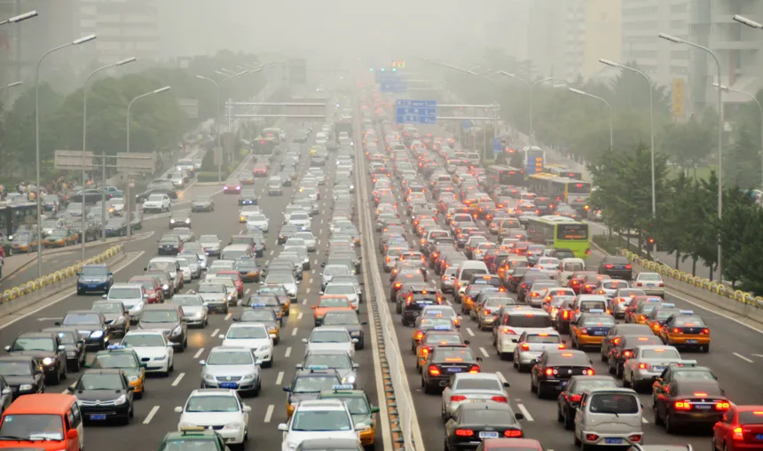

Les déplacements sont une part importante de l’empreinte carbonique des français (31% selon L’ADEME). La plus grande partie des étudiants vit à plus de 3km de l’université, et utilise donc des moyens de transports afin de se rendre sur place. Nous vous présentons ainsi les alternatives envisageables pour réduire votre empreinte carbonne : les transports doux.
“Les transports doux sont des modes de transports qui ne
génèrent pas ou peu de pollution et de gaz à effet de serre.”